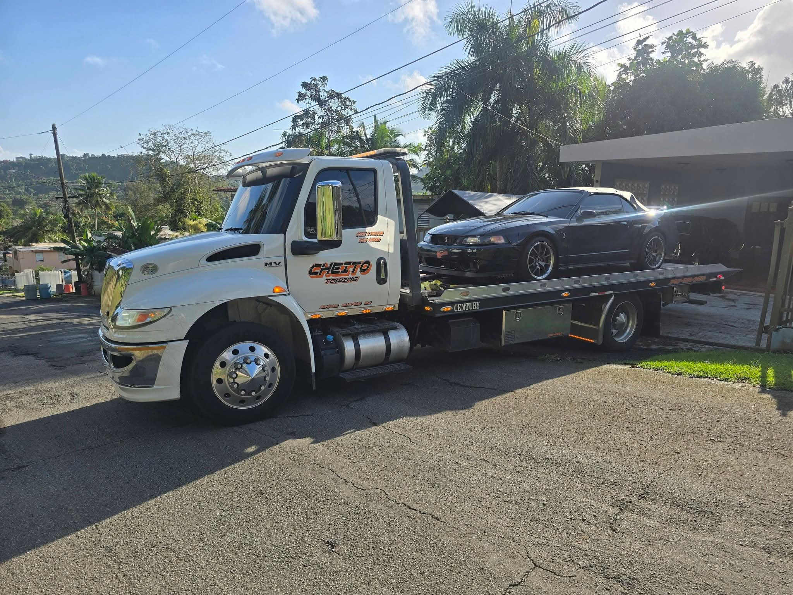
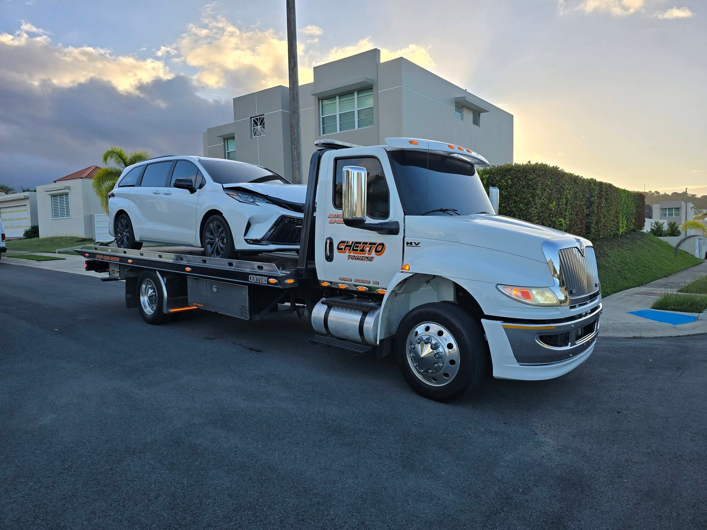
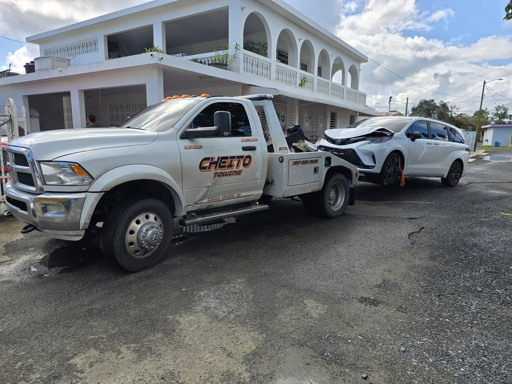
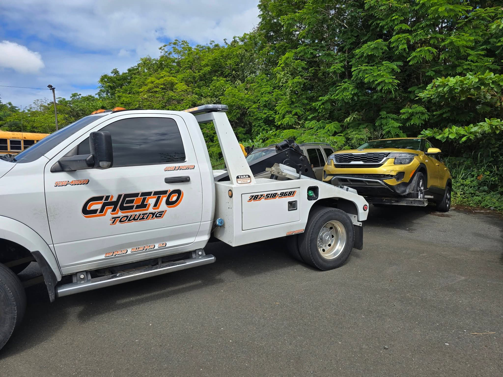
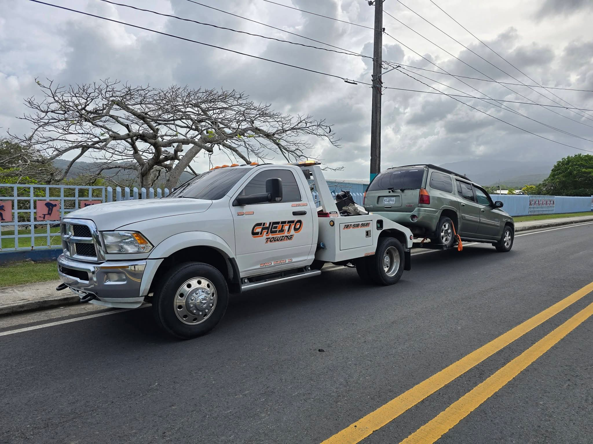
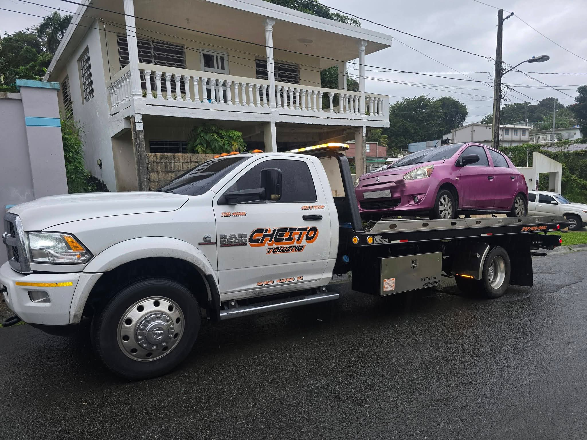
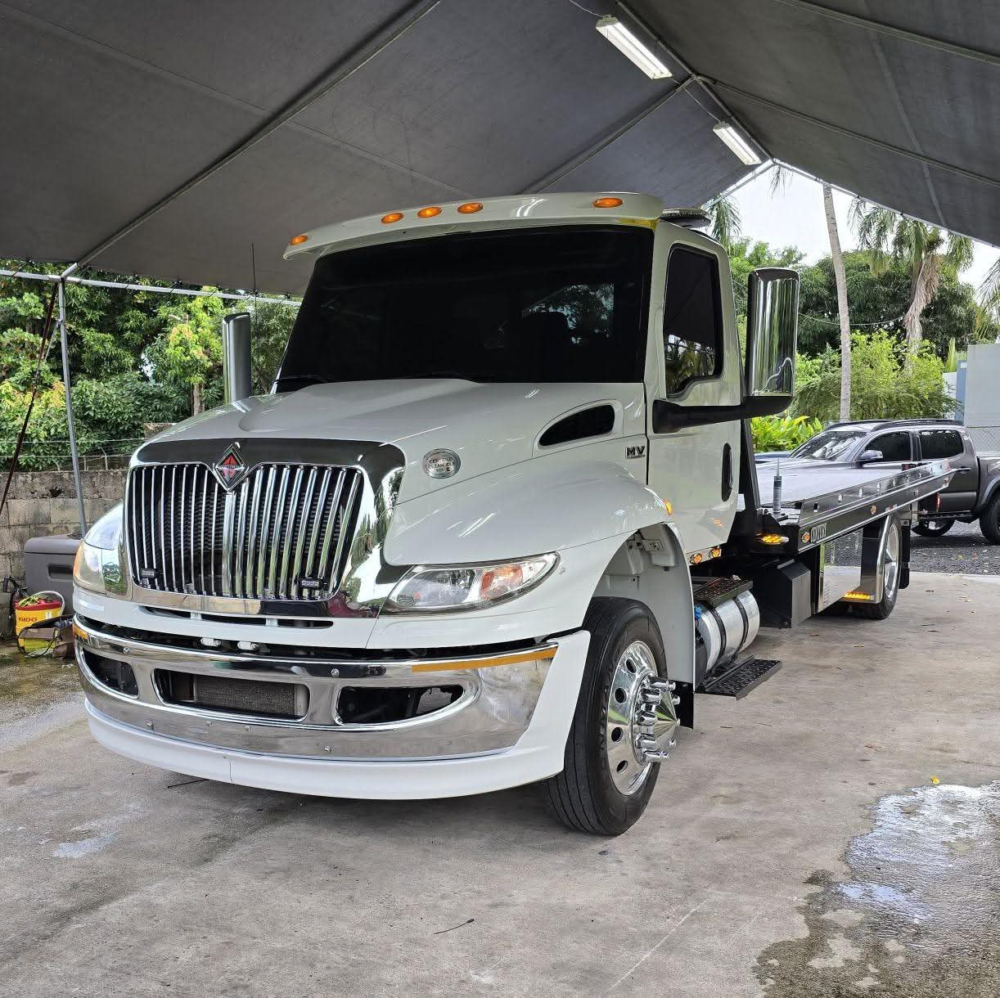
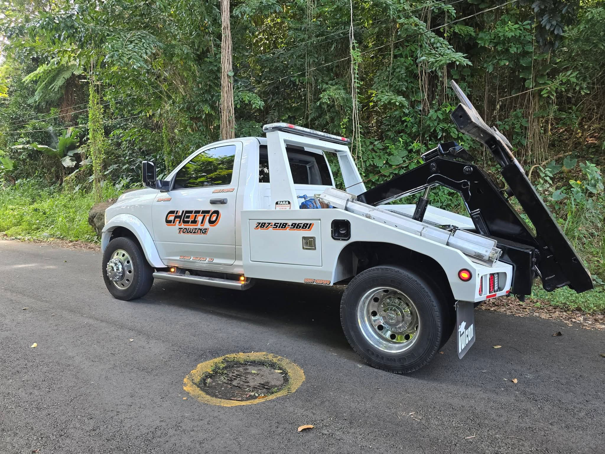

Con más de 10 años de experiencia, Cheito Towing Service se ha consolidado como líder en servicios de grúa en Fajardo, Canóvanas, Loíza, Río Grande y Luquillo. Nos especializamos en brindar asistencia profesional y confiable las 24 horas del día, los 7 días de la semana. Entendemos la importancia de una respuesta rápida cuando más lo necesitas.
Nuestro compromiso es ofrecer un servicio excepcional con profesionalismo, rapidez y cuidado meticuloso de tu vehículo. Desde emergencias en carretera hasta transporte especializado, estamos aquí para ayudarte en cada momento.
ContáctanosSoluciones completas para tu vehículo, a cualquier hora y en cualquier lugar.

Transporte seguro y eficiente de todo tipo de vehículos a cualquier destino.
Ayuda inmediata cuando tu vehículo presenta problemas en la vía.
Servicio profesional de transporte para vehículos particulares y comerciales.
Servicio rápido de arranque cuando tu batería falla.
Reemplazo profesional de neumáticos en el lugar donde te encuentres.
Disponibles en todo momento para atender tus emergencias vehiculares.
Brindamos servicio profesional de grúa en las siguientes zonas de Puerto Rico:
Más de 100+ clientes satisfechos confían en nuestro servicio
"Excelente servicio! Llegaron en menos de 30 minutos cuando mi carro se quedó en la carretera. Muy profesionales y cuidadosos con mi vehículo."
María GonzálezFajardo, PR"Servicio 24/7 real! Los llamé a las 2am y respondieron inmediatamente. Precio justo y muy amables. Los recomiendo 100%."
Carlos RodríguezCanóvanas, PR"Muy confiables y profesionales. Han sido mi servicio de grúa de confianza por años. Siempre atentos y responsables."
Ana MartínezLoíza, PR"Necesitaba un jumpstart y llegaron super rápido. El técnico fue muy profesional y resolvió el problema enseguida. Gracias!"
Luis RiveraRío Grande, PR"Tuve un accidente y Cheito Towing respondió de inmediato. Muy atentos durante todo el proceso. Servicio de primera!"
Sofia PérezLuquillo, PR"Mejor servicio de grúa en el área! Siempre puntuales, honestos con los precios y tratan tu vehículo con cuidado. Altamente recomendados."
Miguel TorresFajardo, PRSiempre disponibles, día y noche, todos los días del año.
Personal certificado y equipos de última generación.
Tiempo de respuesta optimizado para tu tranquilidad.
Compromiso con la excelencia en cada servicio.